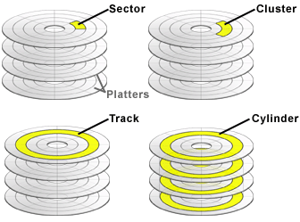

LBA = (C × HPC + H) × SPT + (S − 1)我们如何获得硬盘中的数据？硬盘是如何寻址的？在这篇文章我们将学习硬盘是如何寻址的，这里不会介绍硬盘详细的硬件结构。现代系统重点关注的是LBA的寻址。CHS了解即可。
CHS
在早期，磁盘一个最小单元是扇区，一个扇区一般为512字节，也可以更大，通过使用磁头，柱面，扇区进行寻址。一个机械硬盘的大小等于 磁头数 * 磁道（柱面）数 * 每磁道扇区数 * 每扇区字节数 。
下面的图是一个普通的机械硬盘构成
更加详细的

其中：
-
磁道数（track）：每个盘片从外到里划分多个同心圆，每个同心圆表示一个磁道，由外到里进行编号，如0，1，2…
-
柱面数（cylinder）：柱面数等于磁道的数量
-
磁头数（head）：通常每个盘片分为上下两面，分别表示磁头1，磁头2，依次类推
-
扇区数（sector）：将每个磁道换分为多个扇区，早期每个扇区的扇区数量是相同的，现代采用等密度盘片，导致每个磁道包含的扇区也不一样
-
圆盘数（platter）：通常一个磁盘有多个圆盘构成，一个圆盘就是一个盘片，一个圆盘会有上下两个磁头
所以，早期老式的硬盘通过一个三维立体的磁头，柱面，扇区进行寻址，也就是所说的CHS寻址。
早期的硬盘要求每个磁道的扇区数一样，但对于圆形而言，由于外围的周长要大于内道，所以如果每个磁道的扇区一样，那么外道的记录密度要远远小于内道，这样不仅造成磁盘空间的浪费，同时也限制的硬盘的容量。设计者为了解决这个问题采用了等密度盘，也就是根据柱面的周长确定每个柱面所能包含的扇区数。但这样硬盘就不再具有实际的CHS参数，从而引出了线性寻址LBA，也以扇区作为基本的存储单位进行寻址。
但一些古老的软件仍然使用CHS寻址方式(如使用BIOS Int13H接口的软件)，为了兼容这样的程序，在硬盘控制器内部安装了一个地址翻译器，可以通过它将老式CHS参数翻译成新的线性参数。
LBA
CHS提供一个3维的参数进行寻址硬盘数据，CHS提供柱面，头，扇区3个参数送到磁盘控制器去执行。由于各种不同的规范对于柱面，头，扇区所占用的位数不一样，举个例子，系统使用24位数据寻址的硬盘中表示柱面，头和扇区，系统用8b来存储磁头地址，用10b来存储柱面地址，用6b来存储扇区地址，而一个扇区共有512B，这样使用CHS寻址一块硬盘最大容量为256 * 1024 * 63 * 512B = 8064 MB(1MB = 1048576B)（若按1MB=1000000B来算就是8.4GB）。随着硬盘技术的进步，硬盘容量越来越大，CHS模式无法管理超过8064 MB的硬盘。
由于CHS的局限性，引入了LBA（Logical block addressing）寻址，地址不再表示实际硬盘的实际物理地址（柱面、磁头和扇区）。LBA编址方式将CHS这种三维寻址方式转变为一维的线性寻址，它把硬盘所有的物理扇区的C/H/S编号通过一定的规则转变为一线性的编号，系统效率得到大大提高，避免了烦琐的磁头/柱面/扇区的寻址方式。它隐藏了磁盘的物理结构，将整个磁盘像内存一样提供一个统一的线性空间，比如第一个扇区叫做LBA 0，第二个扇区叫做LBA 1…等等。操作系统不需要关心磁盘的硬盘构造，它只需要告诉它具体LBA编号，由磁盘的控制器负责将具体的数据写入或读取出来。在访问硬盘时，由硬盘控制器再这种逻辑地址转换为实际硬盘的物理地址。这样极大简化了软件的编写。
LBA与CHS的转换
在早期为了将兼用，LBA虽然提供一个一个统一的线性空间，但还需要将LBA转化为CHS，它一般按照以下公式就行转换
其中：
-
C，H，S:分别表示柱面数，磁头数，扇区数
-
LBA: 表示逻辑块地址
-
HPC: 表示每个柱面最大的磁头数量
-
SPT: 表示每个磁道最大支持的扇区数
将LBA转换为C，H，S可以按照以下公式
C = LBA ÷ (HPC × SPT)
H = (LBA ÷ SPT) mod HPC
S = (LBA mod SPT) + 1在这里大概知道有这回事就行了，没必要深究，如果真的想转换正确还需要考虑历史很多的规范。而且现代的硬盘基本都是按照LBA寻址，我们不需要关注磁盘内部的结构，只需要告诉磁盘需要寻址的LBA地址，磁盘控制器会自动做这个转换，将LBA逻辑块转换为真正的磁盘的物理地址。现代的硬盘（机械硬盘和固态硬盘）基本都支持LBA寻址。